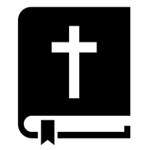
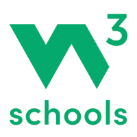
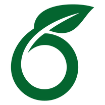
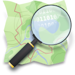
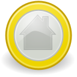

Links
Op deze pagina heb ik links geplaatst naar allerlei vormen van digitale media die naar mijn mening de moeite waard zijn om eens te bekijken. Ik heb ze onderverdeeld in vier categorieën:
Websites
Hieronder is een verzameling links naar interessante, leuke of nuttige websites.

Bijbel Lees hier de Bijbel online
w3schools Op deze website staat veel informatie over programmeren. Een deel van de code van deze website komt hier vandaan, en tijdens het maken van deze website werd w3schools vaak geraadpleegd.
Overleaf online text-editor, beter geschikt voor publicaties dan Word.- Plaatsnamen woordenboek Website met informatie over de herkomst van plaatsnamen in Nederland.
- Indipendent Media Initiative Een instituut dat uitstekende kanalen op het internet beloont.

Open Street Map Een publieke digitale kaart.- Internet Archive Een digitale openbare bibliotheek die gedigitaliseerde informatie bewaart.
- Project Gutenberg Een digitale openbare bibliotheek van elektronische boeken.
Software
Dit is een lijst met software die ik veel gebruik en waar ik tevreden over ben. Zoals te zien in deze lijst ben ik een voorstander van open-source software, maar ik moet toegeven dat betaalde software voor professioneel gebruik vaak beter is.
 Blender Open-source 3D software voor modelleren en het maken van animaties.
Blender Open-source 3D software voor modelleren en het maken van animaties. FreeTube Een app die het mogelijk maakt om anoniem en reclamevrij YouTube te kijken.
FreeTube Een app die het mogelijk maakt om anoniem en reclamevrij YouTube te kijken.
HomeBank Gratis persoonlijk boekhoudprogramma. Handig om persoonlijke uitgaven overzichtelijk bij te houden. Paint.net Simpel maar uitgebreid tekenprogramma.
Paint.net Simpel maar uitgebreid tekenprogramma.- KeePass Een offline open-source wachtwoordenbeheerder.
 Inkscape Open-source vectortekenprogramma
Inkscape Open-source vectortekenprogramma- VLC media player Open-source multimedia speler.
 Kdenlive Gratis en open-source video software.
Kdenlive Gratis en open-source video software. Notepad++ Een uitgebreid kladblok programma met veel nuttige functies.
Notepad++ Een uitgebreid kladblok programma met veel nuttige functies. SolidWorks Geavanceerde CAD-software.
SolidWorks Geavanceerde CAD-software.
Games
Dit is een lijst van games die ik speel of heb gespeeld.
 OpenTTD Een open-source versie van het klassieke spel Transport Tycoon Deluxe.
OpenTTD Een open-source versie van het klassieke spel Transport Tycoon Deluxe. OpenRCT2 Een open-source versie van het klassieke spel Rollercoaster Tycoon.
OpenRCT2 Een open-source versie van het klassieke spel Rollercoaster Tycoon. Microsoft Flight Simulator Momenteel de mooiste vliegsimulator op de markt.
Microsoft Flight Simulator Momenteel de mooiste vliegsimulator op de markt. Euro Truck Simulator 2 Goede simulator.
Euro Truck Simulator 2 Goede simulator. Minecraft Het klassieke blokken spel.
Minecraft Het klassieke blokken spel. Lego Worlds Een Lego spel dat vergelijkbaar is met minecaft. Vroeger speelde ik dit veel.
Lego Worlds Een Lego spel dat vergelijkbaar is met minecaft. Vroeger speelde ik dit veel. Slay Een beurt-gebaseerd strategisch spel. Simpel en ouderwets, maar erg leuk.
Slay Een beurt-gebaseerd strategisch spel. Simpel en ouderwets, maar erg leuk.
Youtube kanalen
Youtube kanalen met video's van hoge kwaliteit die ik graag kijk.